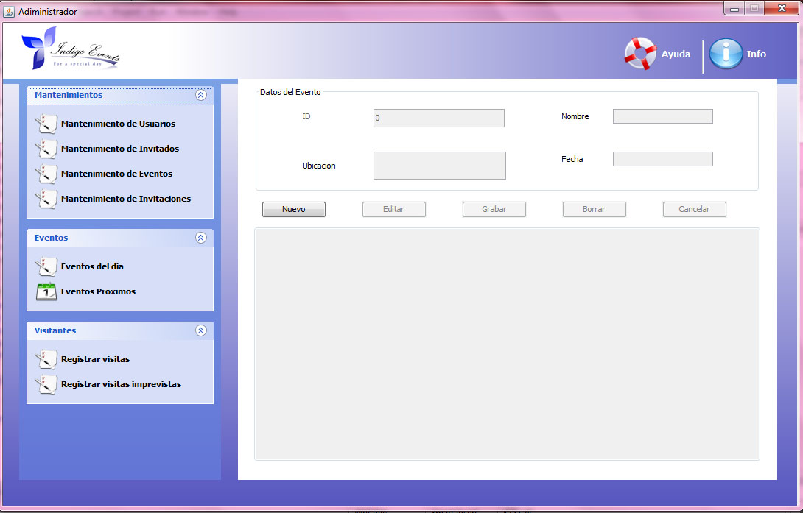

Ventana Administrador
Ventana Mantenimiento de Usuario
La ventana Mantenimiento de Usuario se divide en tres partes en lado izquiedo estan los menus, en la parte del centro tabla de registro, y en la parte de arriba del centro las opciones que manipularan los registros.
Ventana Mantenimiento de Invitados

La ventana Mantenimiento de Invitaciones se divide en tres partes en lado izquiedo estan los menus, en la parte del centro tabla de registro, y en la parte de arriba del centro las opciones que manipularan los registros de las invitaciones .
Mantenimiento de Invitados

La ventana Mantenimiento de Invitadosse divide en tres partes en lado izquiedo estan los menus, en la parte del centro tabla de registro de invitados, y en la parte de arriba del centro las opciones que manipularan los registros de los invitados.
Mantenimiento de Eventos

La ventana Mantenimiento de Eventos se divide en tres partes en lado izquiedo estan los menus, en la parte del centro tabla de registro de invitados, y en la parte de arriba del centro las opciones que manipularan los registros de los invitados.
Copyright © <2012>, <Indigo Events>
Created with the Freeware Edition of HelpNDoc: Single source CHM, PDF, DOC and HTML Help creation